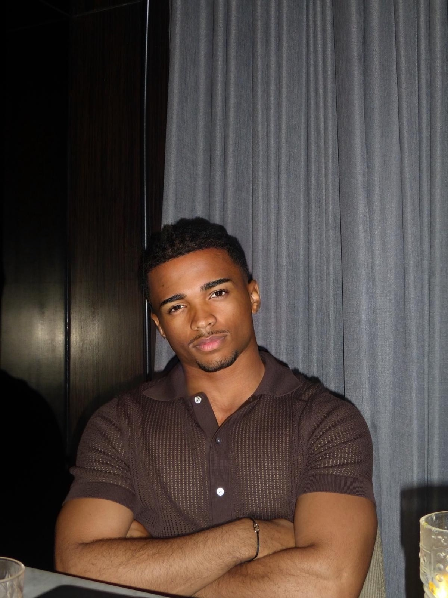

Je suis un étudiant de 19 ans, passionné par le business 💸, le développement personnel 💡, le sport 💪 et l’entrepreneuriat 🚀. Je m’inspire chaque jour du parcours très inspirant de mon grand-père, Feu Monsieur EBOBO Théodore, self-made man camerounais, l’un des pionniers de l’industrie camerounaise. Mon ambition est claire : suivre ses pas, le dépasser, honorer son héritage et tracer ma propre voie.
Découvrir mon parcoursHéritier d’une famille de businessmen, je m’intéresse au monde des affaires ; je suis un grand abonné du magazine africain « Jeune Afrique ». Je suis actuellement en 3e année de bachelor à KEDGE Business School.
Je suis un adepte de la salle de musculation, du football et du golf.
J'aime créer des projets qui ont un impact autour de moi ; je veux laisser une trace derrière moi (PS : je suis un grand fan de Bernard Tapie 😉)
Suis-moi